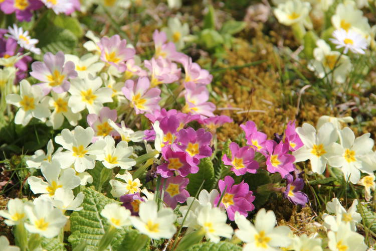

Le mot « spagyrie » signifie séparer et réunir. La spagyrie trouve son origine dans la vieille tradition de la médecine alchimique, basée sur l’œuvre du médecin suisse Paracelse (1493-1541).
La spagyrie apporte les aspects essentiels d’une plante médicinale (huiles essentielles, oligo-éléments, substances minérales, principes actifs), sous une forme assimilable de façon optimale par l’organisme. Préparées selon des méthodes spécifiques (fermentation, distillation, calcination, dynamisation), ces essences trouvent leur application lors de troubles aigus et chroniques et se prêtent également très bien à des buts prophylactiques. Un traitement même prolongé ne produit aucun effet secondaire. Grâce à leur faible teneur en alcool, elles peuvent également être utilisées en pédiatrie. Le spectre d’application est large et va de la tête aux pieds.
La spagyrie prend aujourd’hui une place centrale dans le domaine de la médecine de régulation. Elle appartient aux rares remèdes qui peuvent soutenir le potentiel d’auto guérison du corps physique, psychique et spirituel.
Les essences spagyriques renforcent la vitalité de l’organisme en général et encouragent le processus de régénération.
Plantes et exemple de leurs applications traditionnelles (documents PDF)
Spagyrie Phylak et le cycle des 5 éléments
